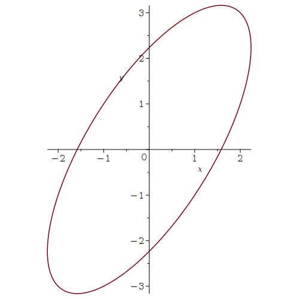
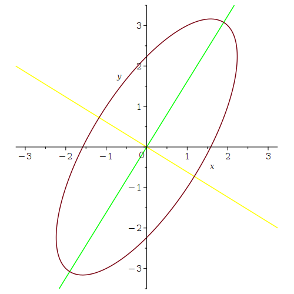
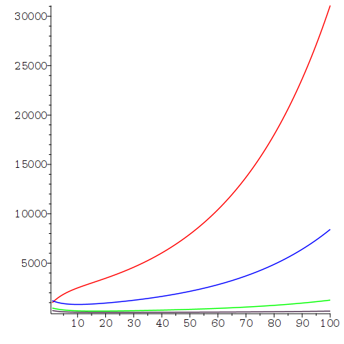

Dans ce document, nous offrons une courte introduction à la librairie LinearAlgebra qui nous permet d'exécuter les opérations traditionnelles en algèbre linéaire.
Il existe un sous-ensemble de la librairie LinearAlgebra qui peut être utilisé pour l'enseignement de l'algèbre linéaire. Il porte le nom de Student:-LinearAlgebra. Cet ensemble comporte certaines contraintes. En particulier, les calculs numériques ne sont pas fait avec toute la précision qui est normalement utilisée pour les librairies de Maple. Cet sous-ensemble ne sera pas inclus dans la présentation ci-dessous.Les fonctions de Maple pour l'algèbre linéaire se trouvent dans la librairie suivante.
> with(LinearAlgebra):
Remplacez les deux-points à la fin de la commande précédente par un point-virgule pour obtenir une liste complète des fonctions dans cette librairie.
Il est facile de créer des vecteurs (colonnes) et des matrices.
> v := Vector([3, 2, -1]);\[ v := \begin{bmatrix} 3 \\ 2 \\ -1 \end{bmatrix} \]
> A := Matrix([[1 , 2 ,3],[2 ,3 ,4],[3,4,5]]);\[ A := \begin{bmatrix} 1 & 2 & 3 \\ 2 & 3 & 4 \\ 3 & 4 & 5 \end{bmatrix} \]
Nous pouvons additionner et multiplier les vecteurs et matrices temps et aussi longtemps que nous respectons les règles pour les dimensions.
> u := A.v;\[ u := \begin{bmatrix} 4 \\ 8 \\ 12 \end{bmatrix} \]
Note: Comme nous devons nous y attende, il y a toujours une exception aux règles, Nous pouvons additionner un scalaire \(s\) à une matrice \(A\). Le résultat est une matrice qui possède les mêmes dimensions que la matrice \(A\) et dont chaque composante de la nouvelle matrice est le résultat de l'addition du scalaire \(s\) à chaque composante de la matrice \(A\).
L'usage du point (.) pour dénoter la multiplication de matrices et vecteurs est optionnel mais fortement suggéré. Le point ne doit pas être mélangé avec l'étoile (*) qui dénote le produit composante par composante de matrices de même dimensions.
> w := u + 2*v;\[ w := \begin{bmatrix} 10 \\ 12 \\ 10 \end{bmatrix} \]
Il est aussi facile de récupérer et de modifier les composantes des vecteurs et matrices.
> w[2]; A[2.3];\[ \begin{split} & 12 \\ & 4 \end{split} \]
> A[2,3] := 7; A;\[ \begin{split} & A_{2,3} := 7 \\ & \begin{bmatrix} 1 & 2 & 3 \\ 2 & 3 & 7 \\ 3 & 4 & 5 \end{bmatrix} \end{split} \]
Le produit scalaire des vecteurs u et v est calculé à l'aide de la commande suivante.
> DotProduct(u,v);\[ 16 \]
Note: Il y a encore une exception aux règles. Le point (.) peut être utilisé pour dénoter le produit scalaire de deux vecteurs de même dimensions. Pour cette raison, si nous voulons qu'un vecteur rangée (colonne) soit traité comme une matrice avec une rangée (colonne), alors nous devons le définir comme une matrice. Si u et v auraient été des matrices avec une rangée, alors u.v n'aurait pas été possible.
La norme Euclidienne, la norme \(1\) et la norme infinie du vecteur v sont:
> norm(v, 2); norm(v, 1); norm(v, infinity);\[ \begin{split} \sqrt{14} \\ 6 \\ 3 \end{split} \]
Le produit vectoriel des vecteurs u est v est calculé par la commande suivante.
> w := CrossProduct(u,v);\[ w := \begin{bmatrix} -31 \\ 40 \\-16 \end{bmatrix} \]
Il est bien connu que w est orthogonal à u et v.
> DotProduct(w,u); DotProduct(w,v);\[ \begin{split} & 0 \\ & 0 \end{split} \]
Nous avons donné ci-dessus la méthode de base pour définir des matrices dans Maple. Il y a plusieurs autres méthodes pour définir des matrices. Les matrices particulières ont souvent leur propre fonction de Maple pour les définir. Voici quelques exemples.
> Id: = IdentityMatrix(3);\[ \begin{bmatrix} 1 & 0 & 0 \\ 0 & 1 & 0 \\ 0 & 0 & 1 \end{bmatrix} \]
> Matrix(3, 4, {(1, 2) = 3, (1, 3) = 5, (3, 4) = 7}, fill = 1);
\[ \begin{bmatrix} 1 & 3 & 5 & 1 \\ 1 & 1 & 1& 1 \\ 1 & 1 & 1 & 7 \end{bmatrix} \]
Il existe aussi une courte formulation pour définir les matrices colonne par colonne.
> B := <<1, 4> |<3, 7>>;\[ B := \begin{bmatrix} 1 & 3 \\ 4 & 7 \end{bmatrix} \]
Ou rangée par rangée.
> D := <<1| 4 > ,<3| 7>>;\[ C := \begin{bmatrix} 1 & 4 \\ 3 & 7 \end{bmatrix} \]
Il existe des méthodes plus sophistiquées pour créer des matrices.
> DiagonalMatrix([A, B]);\[ \begin{bmatrix} 1 & 2 & 3 & 0 & 0 \\ 2 & 3 & 7 & 0 & 0 \\ 3 & 4 & 5 & 0 & 0 \\ 0 & 0 & 0 & 1 & 3 \\ 0 & 0 & 0 & 4 & 7 \end{bmatrix} \]
Voici quelques unes des opérations sur les matrices.
> C := MatrixInverse(B);\[ C := \begin{bmatrix} -\frac{7}{5} & \frac{3}{5} \\ \frac{4}{5} & -\frac{1}{5} \end{bmatrix} \]
> Transpose(B);\[ C := \begin{bmatrix} 1 & 4 \\ 3 & 7 \end{bmatrix} \]
> P, L, U := LUDecomposition(A); P.L.U ;\[ \begin{split} & P, L, U := \begin{bmatrix} 1 & 0 & 0 \\ 0 & 1 & 0 \\ 0 & 0 & 1 \end{bmatrix} , \begin{bmatrix} 1 & 0 & 0 \\ 2 & 1 & 0 \\ 3 & 2 & 1 \end{bmatrix} , \begin{bmatrix} 1 & 2 & 3 \\ 0 & -1 & 1 \\ 0 & 0 & 6 \end{bmatrix} \\ & \qquad \qquad \begin{bmatrix} 1 & 2 & 3 \\ 2 & 3 & 7 \\ 3 & 4 & 5 \end{bmatrix} \end{split} \]
Il y a beaucoup plus de fonctions dans la librairie LinearAlgebra. Par exemple, Adjoint, Basis, CharacteristicPolynomial, ColumnDimension, ColumnSpace, Determinant, Eigenvalues, Eigenvectors, GaussianElimination, GramSchmidt, JordanForm, MatrixExponential, NullSpace, ReducedRowEchelonForm, etc. Nous illustrons seulement deux de ces fonctions ci-dessous.
Exemple: Nous considérons la matrice \(A\) définie par la commande de Maple suivante.
> A:=Matrix([[4,15/7,-4/7],[-6,27/7,18/7],[16,-30/7,29/7]]);\[ A := \begin{bmatrix}4 & \displaystyle \frac{15}{7} & \displaystyle -\frac{4}{7} \\-6 & \displaystyle \frac{27}{7} & \displaystyle \frac{18}{7} \\ 16 & \displaystyle -\frac{30}{7} & \displaystyle \frac{29}{7} \end{bmatrix} \]
Les valeurs propres de la matrice \(A\) sont données par la fonction de Maple suivante.
> eigva:=Eigenvalues(A);\[ eigva := \begin{bmatrix} 6 \\ 3 - 6\, I \\ 3 + 6\, I \end{bmatrix} \]
Les valeurs propres et quelques vecteurs propres de la matrice \(A\) sont donnés par la fonction Eigenvectors() de Maple.
> eigvec:=Eigenvectors(A);\[ eigvec := \begin{bmatrix} 6 \\ 3 + 6\, I \\ 3 - 6\, I \end{bmatrix} , \begin{bmatrix} \displaystyle \frac{1}{4} & \displaystyle -\frac{2}{13} + \frac{3\, I}{13} & \displaystyle -\frac{2}{13} - \frac{3\, I}{13} \\ \displaystyle \frac{1}{2} & \displaystyle -\frac{4}{13} - \frac{7\, I}{13} & \displaystyle -\frac{4}{13} + \frac{7\, I}{13} \\ 1 & 1 & 1 \end{bmatrix} \]
Cette fonction affiche un vecteur colonne qui liste toutes les valeurs propres (répétées \(k\) fois si la multiplicité algébrique d'une valeur propre est \(k\)) et une matrice où la \(i^e\) colonne est un vecteur propre (ou une colonne de zéros si la multiplicité géométrique d'une valeur propre est inférieure à sa multiplicité algébrique) associé à la \(i^e\) composante du vecteur colonne qui liste les valeurs propres. L'ensemble des vecteurs propres est linéairement indépendant. Par exemple, la première colonne de la matrice est un vecteur propre associé à la valeur propre dans la première composante du vecteur colonne, la deuxième colonne de la matrice (si non-nul) est un vecteur propre associé à la valeur propre dans la seconde composante du vecteur colonne, ainsi de suite. Dans l'exemple précédent, \(\displaystyle \begin{pmatrix} 1/4 \\ 1/2 \\ 1 \end{pmatrix} \) est un vecteur propre de \(A\) associé à la valeur propre \(6\), \(\begin{pmatrix} -2/13 + 3i/13 \\ -4/13 - 7i/13 \\ 1 \end{pmatrix}\) est un vecteur propre de \(A\) associé à la valeur propre \(3 +6i\), et \(\begin{pmatrix} -2/13 - 3i/13 \\ -4/13 + 7i/13 \\ 1 \end{pmatrix}\) est un vecteur propre de \(A\) associé à la valeur propre \(3 - 6i\).
Il existe une façon plus naturelle de présenter l'information précédente, en particulier quand il y a des valeur propres dont leur multiplicité géométrique est inférieure à leur multiplicité algébrique. Avec l'option output=list, chaque élément de la liste qui est affiché est associé à une valeur propre distincte. Chaque élément de la liste comprend une valeur propre, sa multiplicité algébrique, et un ensemble linéairement indépendant de vecteurs propres associés à la valeur propre.
Exemple:
> eigvec := Eigenvectors(A,output=list);\[ eigvec := \left[ \left[ 3 + 6\,I, 1, \left[ \begin{bmatrix} \displaystyle -\frac{2}{13} + \frac{3\,I}{13} \\ \displaystyle -\frac{4}{13} - \frac{7\,I}{13} \\ 1 \end{bmatrix} \right]\right], \left[ 3 - 6\,I, 1, \left[ \begin{bmatrix} \displaystyle -\frac{2}{13} - \frac{3\,I}{13} \\ \displaystyle -\frac{4}{13} + \frac{7\,I}{13} \\ 1 \end{bmatrix} \right]\right], \left[ 6 , 1 , \left[ \begin{bmatrix} \displaystyle \frac{1}{4} \\ \displaystyle \frac{1}{2} \\ 1 \end{bmatrix} \right]\right] \right] \]
Les valeurs exactes des valeurs propres et vecteurs propres sont souvent des expressions algébriques très complexes. Si cela est suffisant, nous pouvons demander des estimations réelles / complexes des valeurs propres et vecteurs propres.
Exemple: Soit la matrice \(A\) suivante.
> A:=Matrix([[2,5,4],[-4,2,1],[2,-1,1]]);\[ A := \begin{bmatrix} 2 & 5 & 4 \\-4 & 2 & 1 \\ 2 & -1 & 1 \end{bmatrix} \]
Si nous utilisons les commandes Eigenvalues(A); ou Eigenvectors(A);, alors nous obtenons des expressions très complexes même après simplification avec la fonction simplify(). Il est donc préférable d'utiliser les commandes suivantes.
> evalf(Eigenvalues(A)); evalf(Eigenvectors(A));\[ \begin{split} &\begin{bmatrix} 2.440084089 \\ 1.279957957 + 3.621504875\, I\\ 1.279957957 - 3.621504875\,I \end{bmatrix} \\ & \begin{bmatrix} 2.440084089 \\ 1.279957957 + 3.621504875\, I \\ 1.279957957 - 3.621504875\, I \end{bmatrix} , \\ & \begin{bmatrix} 0.3347749572 & -0.7298875032 + 1.442553403 \, I & - 0.7298875032 - 1.442553403 \, I \\ -0.7705341740 & -1.739732898 - 0.7363980506 \, I & -1.739732898 + 0.7363980506 \, I \\ 1 & 1 & 1 \end{bmatrix} \end{split} \]
Il est encore mieux de définir \(A\) avec des nombres réels en ajoutant un point décimal. Alors tous les calculs sont fait de façon numérique et nous obtenons automatiquement un estimé des valeurs et vecteurs propres.
Exemple:
> A:=Matrix([[2.0,5,4],[-4,2,1],[2,-1,1]]);\[ A := \begin{bmatrix}2.0 & 5 & 4 \\-4 & 2 & 1 \\ 2 & -1 & 1 \end{bmatrix} \]
> Eigenvalues(A); Eigenvectors(A);
Exemple: Nous considérons la matrice
\[ A= \begin{bmatrix} 2 & 1 \\ 1 & 3 \end{bmatrix} \]et dessinons en premier l'image par \(A\) du cercle unité centré à l'origine.
> restart: with(LinearAlgebra): with(plots):
A := Matrix([[2,1],[1,3]]);
v := Vector([x,y]);
u := A.v;
img := subs({x = cos(theta), y = sin(theta)}, u);
plot1 := plot([img[1], img[2], theta = 0 .. 2*Pi], labels = ['x', 'y'],
axes = normal, scaling = constrained);
\[
\begin{split}
& A := \begin{bmatrix} 2 & 1 \\ 1 & 3 \end{bmatrix} \\
& v := \begin{bmatrix} x \\ y \end{bmatrix} \\
& u := \begin{bmatrix} 2 x + y \\ x + 3y \end{bmatrix} \\
& img := \begin{bmatrix} 2\cos(\theta) + \sin(\theta)
\\ \cos(\theta) + 3 \sin(\theta) \end{bmatrix}
\end{split}
\]

Le lecteur a peut être déjà appris dans ses cours d'algèbre linéaire que la direction de l'axe principal de l'ellipse est donnée par un vecteur propre de \(A\) associé à la plus grande valeur propre en valeur absolue, et la direction de l'axe secondaire de l'ellipse est donnée par un vecteur propre de \(A\) associé à la plus petite valeur propre en valeur absolue.
> ev := Eigenvectors(A,output=list);
ev1 := ev[1][3][1]; evalf(abs(ev[1][1]));
ev2 := ev[2][3][1]; evalf(abs(ev[2][1]));
plot2 := plot([ev1[1]*t,ev1[2]*t,t=-3.5..3.5],color=green):
plot3 := plot([ev2[1]*t,ev2[2]*t,t=-2..2],color=yellow):
display({plot1,plot2,plot3},labels=['x','y'],axes=normal,
scaling=constrained);
\[
\begin{split}
&\left[ \left[ \frac{5}{2} + \frac{\sqrt(5)}{2}, 1, \left[
\begin{bmatrix} \frac{1}{\frac{1}{2} + \frac{\sqrt{5}}{2}} \\
1\end{bmatrix} \right]\right],
\left[\frac{5}{2} - \frac{\sqrt(5)}{2} , 1, \left[
\begin{bmatrix} \frac{1}{\frac{1}{2} - \frac{\sqrt{5}}{2}} \\
1\end{bmatrix} \right]\right] \right] \\
& \begin{bmatrix} \frac{1}{\frac{1}{2} + \frac{\sqrt{5}}{2}} \\
1\end{bmatrix} \\
& 3.618033988 \\
& \begin{bmatrix} \frac{1}{\frac{1}{2} - \frac{\sqrt{5}}{2}} \\
1\end{bmatrix} \\
& 1.381966012
\end{split}
\]

Exemple (Processus de Markov): Une épicerie met en vente à chaque jour un des trois catégories de fruits suivantes: pommes, bananes et oranges. La catégorie de fruits en vente durant une journée est déterminée par la catégorie de fruits en vente durant la journée précédente selon la règle suivante. Les composantes de la matrice
\[ P = \begin{pmatrix} 1/2 & 1/3 & 1/2 \\ 1/3 & 1/2 & 1/2 \\ 1/6 & 1/6 & 0 \end{pmatrix} \]ont les significations suivantes
La matrice \(P\) est une matrice stochastique; c'est-à-dire, toutes les composantes de \(P\) sont des valeurs entre 0 et 1 (incluant 0 et 1) et la somme des composantes dans chaque colonne est égale à 1. Cette dernière condition signifie qu'il y a une probabilité de 100% qu'une des trois catégories de fruits soit en vente durant une journée si une des catégories est en vente la journée précédente. C'est une tautologie car la politique de l'épicerie est de mettre en vente une des trois catégories à chaque jour.
La matrice \(P^n\) donne la probabilité qu'une catégorie de fruits soit en vente dans \(n\) jours si une certaine catégorie de fruits est en vente aujourd'hui. Nous utilisons Maple pour trouver la probabilité que les bananes soient en vente dans 20 jours si les oranges sont en vente aujourd'hui. Cette probabilité est donnée par la valeur de la composante à la position \((2,3)\) de la matrice \(P^n\).
> restart: with(LinearAlgebra): P := Matrix([[1/2,1/3,1/2],[1/3,1/2,1/2],[1/6,1/6,0]]); P20 := P^20; evalf(P20(2,3));\[ \begin{split} & P := \begin{bmatrix} \frac{1}{2} & \frac{1}{3} & \frac{1}{2} \\ \frac{1}{3} & \frac{1}{2} & \frac{1}{2} \\ \frac{1}{6} & \frac{1}{6} & 0 \end{bmatrix} \\ & P20 := \begin{bmatrix} \frac{391731261435319}{914039610015744} & \frac{522308348580425}{1218719480020992} & \frac{522308348580425}{1218719480020992} \\ \frac{522308348580425}{1218719480020992} & \frac{391731261435319}{914039610015744} & \frac{522308348580425}{1218719480020992} \\ \frac{522308348580425}{3656158440062976} & \frac{522308348580425}{3656158440062976} & \frac{87051391430071}{609359740010496} \end{bmatrix} \\ & 0.4285714286 \end{split} \]
Donc, il y a une probabilité d'environ 42.86 % que les bananes soient en vente dans 20 jours si les oranges sont en vente aujourd'hui.
Nous supposons que \(\displaystyle \vec{p} = \begin{pmatrix} p_1 \\ p_2 \\ p_3 \end{pmatrix} \) est la distribution de probabilité le jour de l'inauguration de l'épicerie. C'est-à-dire,
Donc \( \vec{p}_n = P^n \vec{p} \) est la distribution de probabilité \(n\) jours après l'inauguration; c'est-à-dire,
Si \(\displaystyle \vec{p} = \begin{pmatrix} 1/5 \\ 2/5 \\ 2/5 \end{pmatrix} \), alors la probabilité que les oranges seront en vente 100 jours après l'inauguration est donnée par les commandes suivantes de Maple.
> p := Vector([1/5,2/5,2/5]); P100 := (P^100).p: evalf(P100(3));\[ \begin{split} & p := \begin{bmatrix} \frac{1}{5} \\ \frac{2}{5} \\ \frac{2}{5} \end{bmatrix} \\ & 0.1428571429 \end{split} \]
La probabilité que les oranges seront en vente 100 jours après l'inauguration est d'environ 14.29 %. Nous n'avons pas affiché le résultat de (P^100).p car la valeur exacte contient de très grandes valeurs entières. Le lecteur peut exécuter la commande (P^100).p; pour voir ce résultat.
Si nous calculons la probabilité d'être en vente de chacune des catégories de fruits \(200, 300\) et \(400\) jours après l'inauguration, alors nous obtenons les résultats suivants qui sont arrondis à 10 décimales.
> seq( evalf((P^n).p), n=200..400, 100);\[ \begin{bmatrix} 0.4285714286 \\ 0.4285714286 \\ 0.1428571429 \end{bmatrix} , \begin{bmatrix} 0.4285714286 \\ 0.4285714286 \\ 0.1428571429 \end{bmatrix} , \begin{bmatrix} 0.4285714286 \\ 0.4285714286 \\ 0.1428571429 \end{bmatrix} \]
Il semble que \( P^n \vec{p}\) converge vers un vecteur fixe lorsque \(n \to \infty\). Voici quelques propriétés des matrices stochastiques. Plusieurs de ces propriétés sont faciles à démontrer et nous encourageons le lecteur à les démontrer.
Nous pouvons illustrer ce dernier résultat à l'aide de Maple.
> evvL := Eigenvectors(P,output=list):
findMax := proc(evvList)
local i, eva, eve:
eva := evvList[1][1]:
eve := evvList[1][3][1]:
for i from 2 to nops(evvList) do
if ( evalf(abs(evvList[i][1])) > evalf(abs(eva)) ) then
eva := evvList[i][1]:
eve := evvList[i][3][1]:
end if
od:
RETURN([eva,eve]):
end:
findP := findMax(evvL):
eigvalP := findP[1];
eigvctP := findP[2];
u1 := norm(eigvctP,1)^(-1) * eigvctP; evalf(u1);
\[
\begin{split}
& eigvalP := 1 \\
& eigvctP := \begin{bmatrix} 3 \\ 3 \\ 1 \end{bmatrix} \\
& u1 := \begin{bmatrix} \frac{3}{7} \\ \frac{3}{7} \\ \frac{1}{7}
\end{bmatrix} \\
& \begin{bmatrix} 0.4285714286 \\ 0.4285714286 \\ 0.1428571429
\end{bmatrix}
\end{split}
\]
Note: La raison pour laquelle nous avons écrit une procédure pour trouver la plus grande valeur propre en valeur absolue et un vecteur propre qui lui est associé est que Maple n'affiche pas toujours les valeurs propres et vecteurs propres dans le même ordre. En particulier, la plus grande valeur propre en valeur absolue n'occupe pas toujours la même position dans la liste. La position varie selon le problème qui est résout (et même selon la version de MaplefindMax() n'est pas la plus générale procédure. Elle ne peut pas traiter les cas où il y a plus d'une plus grande valeur propre en valeur absolue ou les cas où il y a plus qu'un vecteur propre linéairement indépendant associé à la plus grande valeur propre en valeur absolue. Comme exercice, le lecteur est invité à généraliser la procédure ci-dessus.
Exemple: Un modèle pour la distribution annuelle d'une population repose sur quatre groupes d'âges. Pour la ne année, nous assumons que
Nous assumons aussi que l'évolution de la population est décrite par le système linéaire itératif
\[ \vec{x}_{n+1} = T \vec{x}_n \]où
\[ T=\begin{pmatrix} 1-d_1-t_1+b_1 & b_2 & 0 & 0 \\ t_1 & 1-d_2-t_2 & 0 & 0 \\ 0 & t_2 & 1-d_3-t_3 & 0 \\ 0 & 0 & t_3 & 1-d_4\\ \end{pmatrix} \]et
\[ \vec{x}_n = \begin{pmatrix} x_{n,1} \\ x_{n,2} \\ x_{n,3} \\ x_{n,4} \end{pmatrix} \ . \]Les paramètres \(d_i\) et \(b_i\) sont les taux de mortalité et de naissance respectivement pour le \(i^e\) groupe d'âges; c'est-à-dire, pour la \(n^e\) année, \(d_i x_{n,i}\) individus du \(i^e\) groupe d'âges perdent la vie et les membres de ce groupe donnent naissance à \(b_i x_{n,i}\) individus. De plus, \(t_i\) est le taux de transfert du \(i^e\) groupe d'âges au \((i+1)^e\) groupe d'âges; c'est-à-dire, pour la \(n^e\) année, \(t_i x_{n,i}\) individus du \(i^e\) groupe d'âges atteignent l'âge pour joindre le \((i+1)^e\) groupe d'âges. La matrice \(T\) est appelée la matrice de transfert.
Nous supposons que \(d_1=1/25, d_2=2/25, d_3=5/25\), \(d_4=8/25\), \(t_1=t_2=t_3=1/25\), \(b_0= 1/25\) et \(b_2=1/4\). Nous obtenons la matrice de transfert suivante.
> with(plots):
T := Matrix([[1-d1-t1+b1,b2,0,0],[t1,1-d2-t2,0,0],
[0,t2,1-d3-t3,0],[0,0,t3,1-d4]]);
Tb := subs({d1=1/25,d2=2/25,d3=5/25,d4=8/25,t1=1/25,t2=1/25,
t3=1/25,b1=1/25,b2=1/4},T);
\[
\begin{split}
& T := \begin{bmatrix} 1 - d1 - t1 + b1 & b2 & 0 & 0 \\
t1 & 1 - d2 - t2 & 0 & 0 \\
0 & t2 & 1 - d3 - t3 & 0 \\
0 & 0 & t3 & 1 - d4 \end{bmatrix} \\
& Tb := \begin{bmatrix}
\frac{24}{25} & \frac{1}{4} & 0 & 0 \\
\frac{1}{25} & \frac{22}{25} & 0 & 0 \\
0 & \frac{1}{25} & \frac{19}{25} & 0 \\
0 & 0 & \frac{1}{25} & \frac{17}{25}
\end{bmatrix}
\end{split}
\]
La matrice \(T\) n'est pas une matrice stochastique comme à l'exemple précédent. Nous supposons que la distribution de la population initiale est de 1000 individus dans le premier groupe d'âges, 1200 individus dans le deuxième groupe d'âges, 450 individus dans le troisième groupe d'âges et 200 individus dans le quatrième groupe d'âges. Nous traçons pour chacun des groupes d'âges le graphe du nombre d'individus par année sur une période de 100 ans, et affichons ces graphes sur la même figure.
> x0 := Vector([1000, 1200, 450, 200]);
Anu := proc(A, N, u)
local i, V:
V := u, u:
for i from 2 to N + 1 do
V := V,A.V[i]:
od:
RETURN(V[2 .. N + 2]):
end proc:
TbN := Anu(Tb,100,x0):
plot1 := plot([seq([j,TbN[j][1]],j=1..100)], color=red):
plot2 := plot([seq([j,TbN[j][2]],j=1..100)], color=blue):
plot3 := plot([seq([j,TbN[j][3]],j=1..100)], color=green):
plot4 := plot([seq([j,TbN[j][4]],j=1..100)], color=violet):
display({plot1,plot2,plot3,plot4});
\[
x0 := \begin{bmatrix} 1000 \\ 1200 \\ 450 \\ 200 \end{bmatrix}
\]

Après quelques années, nous observons une croissance exponentielle de la population. Cela ne peut pas être maintenu.
Note: Nous aurions pu générer TbN avec la commande TbN:=seq(Tb^j.v0, j=0..100):. Cependant, c'est une façon coûteuse de générer TbN car cela implique le calcul de Tb^j pour j=0..100. Donc, nous répétons plusieurs fois les mêmes multiplications de matrices. De plus, les multiplications de matrices demandent beaucoup de temps. Nous avons écrit une petite procédure afin de réduire le nombre de multiplications de matrices.
La ligne V := u, u: est la façon la plus simple que nous avons trouvé pour initialiser une liste. L'énoncé V := u: n'aurait pas initialisé une liste mais un vecteur. La boucle n'aurait alors pas fonctionnée. Nous aurions pu initialiser V avec l'énoncé V:= u, A.u: si nous assumons qu'au moins une itération sera toujours demandée. Le reste de la procédure devrait alors être remplacé par for i from 2 to N do V := V,A.V[i]: od: RETURN(V[1 .. N + 1]):.
Exemple (suite): Est-ce que le modèle que nous avons utilisé pour décrire l'évolution d'une population est valide? Si nous supposons que la distribution initiale de la population est donnée par \(x_{0,1} = 1000\) et \(x_{0,2} = x_{0,3} = x_{0,4} = 0\), alors n'est ce pas que nous ne devrions pas avoir d'individus âgés de 45 ans et plus après 25 ans?
> x00 := Vector([1000, 0, 0, 0]); evalf(Tb^(25).x00);\[ \begin{split} & x00 := \begin{bmatrix} 1000 \\ 0 \\ 0 \\ 0 \end{bmatrix} \\ & \begin{bmatrix} 1359.504685 \\ 366.6737060 \\ 54.27563352 \\ 6.141708437 \end{bmatrix} \end{split} \]
Pourquoi le modèle prédit-il qu'après 25 ans il y aura des
individus âgés de plus de 45 ans et même de plus de 75 ans?
Le problème est que le modèle assume une distribution
uniforme de la population dans chacun des groupes d'âges. Par
exemple, le modèle ne fait pas la différence entre un individu âgé de
21 ans et un âgé de 22 ans, ou même entre un individu âgé de
21 ans et un âgé de 45 ans. Donc, lorsqu'un individu du premier groupe
d'âges transfère au second groupe d'âges, cet individu est
partiellement
compté comme un individu âgé de 45 ans
(un saut de 25 ans). Nous observons le même phénomène entre le
deuxième et troisième groupe d'âge, et entre le troisième et quatrième
groupe d'âges. Pour être plus réaliste, le modèle devrait avoir des
groupes d'âges qui couvrent seulement une année.
Nous avons aussi noté dans la première partie de cet exemple le problème associé à la croissance exponentielle qui ne peut pas être maintenue. Ce problème est une conséquence de notre hypothèse que le taux de croissance annuel de la population est linéaire. Ceci produit une croissance exponentielle de la population au fil du temps. Cela ne veut pas dire que le modèle devrait être complètement rejeté. Des modèles de ce genre sont très bons pour certaines grandes populations d'insectes (ou des populations de bactéries) et pour des périodes de temps limitées. Les années doivent évidemment être remplacées par une plus courte unité de temps.
Bien que ce ne soit pas un problème en soi, il faut aussi mentionner que les données fournies par le modèle contiennent des fractions d'individus. Cela n'a évidemment pas de sens. Nous devons interpréter les données comme des approximations des nombres entiers d'individus. Le modèle a plus de valeur pour les très nombreuses populations.
Nous illustrons numériquement que, pour \(n\) suffisamment grand,
la croissance de la population est proportionnelle
à \(\lambda^n \vec{v} \) où \(\lambda\) est la
plus grande valeur propre de \(T\) en valeur absolue et \(\vec{v}\)
est un vecteur propre associé à \(\lambda\). Plus précisément, il
existe une constante \(k\) telle que
\(\displaystyle \vec{x}^{[n]} / \lambda^n \to k \vec{v} \)
lorsque \(n\to \infty\). Le lecteur devrait
démontrer rigoureusement ce résultat si cela n'a pas déjà été fait
dans un de ses cours d'algèbre linéaire. Nous cherchons en premier la
plus grande valeur propre de \(T\) en valeur absolue et un vecteur
propre qui lui est associé. Nous utilisons la procédure
fincMax() définie à l'exemple
précédent.
> evT := Eigenvectors(Tb,output=list): findR := findMax(evT): eigvalM := findR[1]; eigvctM := findR[2]; eigvalMf := evalf(eigvalM); eigvctMf := evalf(eigvctM);\[ \begin{split} & eigvalM := \frac{23}{25} + \frac{\sqrt{29}}{50} \\ & eigvctM := \begin{bmatrix} \frac{25\left(4 + \frac{\sqrt{29}}{2}\right) \left(6 + \frac{\sqrt{29}}{2}\right)} {4\left(-1 + \frac{\sqrt{29}}{2}\right)} \\ \left(4 + \frac{\sqrt{29}}{2}\right) \left(6 + \frac{\sqrt{29}}{2}\right) \\ 6 + \frac{\sqrt{29}}{2} \\ 1 \end{bmatrix} \\ & eigvalMf := 1.027703296 \\ & eigvctMf := \begin{bmatrix} 214.8190241 \\ 58.17582404 \\ 8.692582404 \\ 1 \end{bmatrix} \end{split} \]
Notons que, pour des valeurs positives assez petites de \(b_i, d_i\) et \(t_i\), toutes les valeurs propres de \(T\) sont positives.
Nous comparons \(T^{1000} \vec{x}_0\) à \( \lambda^{1000} \vec{v}\) et \(T^{2000} \vec{x}_0\) à \( \lambda^{2000} \vec{v}\).
> TbNx0 := evalf(Tb^(1000).x0); seq(TbNx0[i]/(eigvalMf^1000 * eigvctMf[i]),i = 1..4); TbNx0 := evalf(Tb^(2000).x0); seq(TbNx0[i]/(eigvalMf^2000 * eigvctMf[i]),i = 1..4);\[ \begin{split} & TbNx0 := \begin{bmatrix} 1.532783229 \times 10^{16} \\ 4.150979075 \times 10^{14} \\ 6.202357812 \times 10^{13} \\ 7.135230388 \times 10^{12} \end{bmatrix} \\ & 9.675170398, 9.675170396, 9.675170396, 9.675170396 \\ & TbNx0 := \begin{bmatrix} 1.130394871 \times 10^{27} \\ 3.061258348 \times 10^{26} \\ 4.574106322 \times 10^{25} \\ 5.262079909 \times 10^{24} \end{bmatrix} \\ & 9.675171744, 9.675171738, 9.675171740, 9.675171741 \end{split} \]
Nous aurions pu choisir n'importe quelle grande valeur pour l'exposant et nous aurions obtenu des résultats semblables. Nous pouvons donc assumer que \(T^n \vec{x}_0 \approx 9.67517174\, \lambda^n \vec{v}\). Naturellement, la constante de proportionnalité sera différente si nous choisissons un autre vecteur propre \(\vec{v}\) associé à la valeur propre \(\lambda\), ou si nous choisissons une condition initiale \(\vec{x}_0\) différente.
Il est possible d'évaluer une fonction à chacune des composantes d'une matrice ou d'un vecteur. Nous considérons la fonction suivante.
> mf:= x-> x^3-x;\[ mf := x \mapsto x^3 - x \]
Pour évaluer la fonction mf à chacune des composantes de B, nous utilisons la fonction map() de Maple.
> map(mf,B);\[ \begin{bmatrix} 0 & 24 \\ 60 & 336 \end{bmatrix} \]
Nous considérons le système d'équations linéaires suivant.
> eq1 := 3*x+2*y-z=1; eq2 := -x+2*y+z=0; eq3 := -x-y-z=3;\[ \begin{split} eq1 &:= 3 x+2 y-z = 1 \\ eq2 &:= -x+2 y+z = 0 \\ eq3 &:= -x-y-z = 3 \end{split} \]
Pour déterminer si le système à une solution unique, nous pouvons calculer le déterminant de la matrice formée des coefficients.
> A : <<3,-1,-1>|<2,2,-1>|<-1,1,-1>>: > Determinant(A)\[ -10 \]
Puisque le déterminant est non-nul, il existe une solution unique. Pour trouver cette solution, nous utilisons la fonction solve() de Maple.
> sol:=solve({eq1,eq2,eq3},{x,y,z});
\[ sol := \left\{z = -\frac{27}{10}, y = \frac{4}{5}, x = -\frac{11}{10} \right\} \]
Pour récupérer les valeurs x, y et z de cet ensemble, nous utilisons la fonction subs() de Maple.
> x := subs(sol,x); y := subs(sol,y); z := subs(sol,z);\[ \begin{split} x &:= -\frac{11}{10} \\ y &:= \frac{4}{5} \\ z &:= -\frac{27}{10} \end{split} \]
Puisque la matrice A est inversible, nous savons que la solution du système d'équations linéaires est donnée par la formule suivante.
> MatrixInverse(A).Vector([1,0,3]);\[ \begin{bmatrix} \displaystyle -\frac{11}{10} \\ \displaystyle \frac{4}{5} \\ \displaystyle -\frac{27}{10} \end{bmatrix} \]
la fonction solve() de Maple peut faire beaucoup plus que ce que nous avons illustré ci-dessus. Par exemple, nous pouvons résoudre les deux premières équations pour \(x\) et \(z\) en fonction de \(y\).
> solve({eq1,eq2},{x,z});
\[
\left\{x = -2\,y+\frac{1}{2}, z = -4\,y+\frac{1}{2}\right\}
\]
Nous pouvons calculer la norme induite d'une matrice carrée. Soit la matrice \(C\) définie ci-dessous.
> C:=Matrix([ [2,-1,0,0],[-1,2,-1,0],[0,-1,2,-1], [0,0,-1,2]]);\[ C := \begin{bmatrix} 2& -1 & 0 & 0\\ -1 & 2& -1& 0 \\ 1 & -1 & 2 &-1\\ 0 & 0& -1& 2 \end{bmatrix} \]
La norme \(1\), la norme \(2\) et la norme infinie de la matrice \(C\) sont données par les commandes suivantes.
> Norm(C,1); Norm(C,2); Norm(C,infinity);\[ \begin{split} & 4 \\ &\sqrt{ RootOf(\_Z^{4}-23\,\_Z^3 + 130\_Z^2 - 176\_Z + 49, index =4)} \\ & 5 \end{split} \]
La représentation en virgule flottante (une estimé) de la norme \(2\) de \(C\) est
> evalf(Norm(C,2));\[ 3.897563191 \]
Comment les normes induites sont-elles calculées? Il peut être démontré que la norme \(1\) d'une matrice \(C\) de dimensions \(n \times n\) est le maximum de \(\displaystyle \sum_{i=1}^n |c_{i,j}|\) pour \(j=1, 2, \ldots, n\). Ainsi, la norme \(1\) de la matrice \(C\) ci-dessus est
> max( seq( add(abs(C[i,j]),i=1..4 ), j=1..4) );\[ 4 \]
Une formulation équivalente de la commande précédente est la commande suivante.
> max(seq( Norm(SubMatrix(C,1..4,i),1),i=1..4));\[ 4 \]
La fonction SubMatrix() est utilisée pour extraire une sous-matrice d'une matrice donnée. Dans la commande ci-dessus, SubMatrix(C,1..4,i) donne la \(i^{e}\) colonne de la matrice \(C\). La fonction Norm() avec l'option \(1\) calcul la norme \(1\) de chaque vecteur (colonne) obtenu de la matrice \(C\); c'est-à-dire, calcul la somme en valeur absolue des composantes de chaque colonne de la matrice \(C\).
De façon semblable, il est possible de démontrer que la norme infinie d'une matrice \(A\) de dimensions \(n \times n\) est le maximum de \(\displaystyle \sum_{j=1}^n |c_{i,j}|\) pour \(i=1, 2, \ldots, n\). Ainsi, la norme infinie de la matrice \(C\) ci-dessus est
> max( seq(add(abs(C[i,j]), j=1..4), i=1..4) );\[ 4 \]
Finalement, avec un peu plus de travail que pour les deux normes précédentes, il est possible de démontrer que la norme \(2\) d'une matrice \(A\) de dimension \(n \times n\) est la racine carrée de la plus grande valeur propre en valeur absolue de la matrice \(\displaystyle A A^\ast\). Ainsi, la norme \(2\) de la matrice \(C\) ci-dessus est
> tmp:=evalf(Eigenvalues(C.Transpose(C))): > sqrt(max(seq(abs(tmp[i]),i=1..4)));\[ 3.897563191 \]
Exemple (Nombre de conditionnement): Si \(A\vec{y} - \vec{b}\) est petit, alors est-ce que cela signifie que \(\vec{y}\) est proche de la solution de \(A\vec{x} = \vec{b}\)?
Par exemple, Nous considérons la matrice \(A\) définie par la commande
> A:=Matrix([[3,6],[2.9999,6]]);\[ A := \begin{bmatrix} 3& 6\\ 2.9999 & 6 \end{bmatrix} \]
et le vecteur \(\vec{b}\) définie par la commande
> b := Matrix([[9],[8.9999]]);\[ b := \begin{bmatrix} 9 \\ 8.9999 \end{bmatrix} \]
Le vecteur \(\vec{y}\) définie par la commande
> y:=Matrix([[3],[0]]);\[ y := \begin{bmatrix} 3\\ 0\end{bmatrix} \]
semble être une bonne estimée de la solution \(\vec{x}\) de \(A\vec{x} = \vec{b}\) car \(\| A \vec{y} - \vec{b}\|_\infty\) est petit. En fait, Maple donne la petite valeur suivante.
> Norm( A.y-b, infinity);\[ 0.000200000000001310241 \]
Cependant, ce n'est pas vrai car la solution est \(\displaystyle \vec{x} = \begin{pmatrix} 1 \\ 1 \end{pmatrix}\). La raison de ce comportement est la grande valeur du nombre de conditionnement de la matrice \(A\). Le nombre de conditionnement de la matrice \(A\), si on utilise la norme infinie, est définie par la formule \(\| A^{-1} \|_\infty \|A \|_\infty\). Le nombre de conditionnement est une façon de comparer en valeur absolue la plus grande valeur propre avec la plus petite valeur propre de la matrice \(A\). Plus le nombre de conditionnement d'une matrice est grand, plus la différence en valeur absolue de ces deux valeurs propres est grande. Cela a un effet significatif lors de la résolution d'un système d'équations linéaires. Un petit changement du côté droit du système d'équations linéaires (i.e \(\vec{b}\)) peut avoir un grand effet sur la solution. Le nombre de conditionnement de la matrice \(A\) ci-dessus est
> cond:=Norm(A,infinity)*Norm(MatrixInverse(A),infinity);\[ cond := 180000.0000 \]
Puisque le nombre de conditionnement de la matrice \(A\) est grand, nous disons que la matrice \(A\) est mal conditionnée.